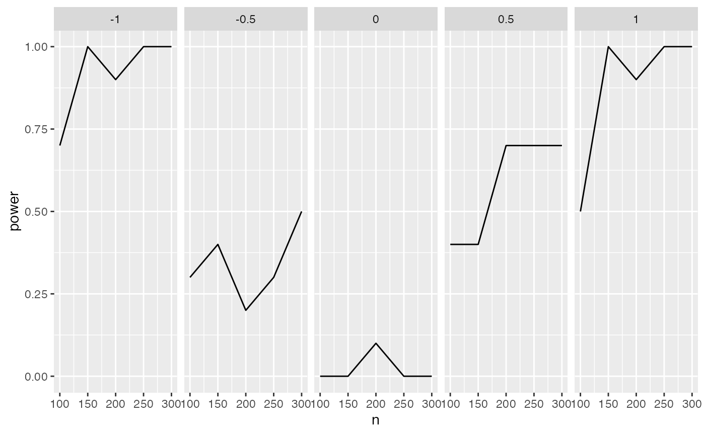

library(simpr)
#>
#> Attaching package: 'simpr'
#> The following object is masked from 'package:stats':
#>
#> filter
#> The following objects are masked from 'package:base':
#>
#> intersect, setdiff, setequal, unionWhat’s our power to detect an interaction in a linear model? The entire simulation and tidying happens in just a few lines of code:
set.seed(100)
simpr_tidy = ## Specify the simulation
specify(x1 = ~ 2 + rnorm(n),
x2 = ~ 3 + 2*x1 + rnorm(n, 0, sd = 0.5),
y = ~ 5 + x1 + x2 + g1*x1*x2 + 10 * rnorm(n)) %>%
## Define varying parameters: here, sample size and effect size
define(n = seq(100, 300, by = 50),
g1 = seq(-1, 1, by = 0.5)) %>%
## Generate 10 repetitions
generate(10) %>%
## Fit models
fit(lm = ~lm(y ~ x1*x2))%>%
## Tidy each simulation using broom::tidy and
## bind together
tidy_fitsThis gives a tibble with slope estimates and p values for all parameters in the model.
simpr_tidy
#> # A tibble: 1,000 × 10
#> .sim_id n g1 rep Source term estimate std.error statistic p.value
#> <int> <dbl> <dbl> <int> <chr> <chr> <dbl> <dbl> <dbl> <dbl>
#> 1 1 100 -1 1 lm (Inter… -2.32 7.37 -0.314 7.54e-1
#> 2 1 100 -1 1 lm x1 -0.953 4.93 -0.193 8.47e-1
#> 3 1 100 -1 1 lm x2 2.46 2.07 1.18 2.39e-1
#> 4 1 100 -1 1 lm x1:x2 -0.921 0.372 -2.47 1.51e-2
#> 5 2 150 -1 1 lm (Inter… 7.23 5.31 1.36 1.75e-1
#> 6 2 150 -1 1 lm x1 3.13 3.80 0.824 4.11e-1
#> 7 2 150 -1 1 lm x2 -0.0135 1.57 -0.00861 9.93e-1
#> 8 2 150 -1 1 lm x1:x2 -0.982 0.256 -3.84 1.86e-4
#> 9 3 200 -1 1 lm (Inter… 16.4 5.55 2.96 3.43e-3
#> 10 3 200 -1 1 lm x1 -0.647 3.94 -0.164 8.70e-1
#> # … with 990 more rowsWe can easily filter this and compute power for each condition using dplyr:
library(dplyr)
#>
#> Attaching package: 'dplyr'
#> The following objects are masked from 'package:stats':
#>
#> filter, lag
#> The following objects are masked from 'package:base':
#>
#> intersect, setdiff, setequal, union
condition_power = simpr_tidy %>%
filter(term %in% "x1:x2") %>%
group_by(n, g1) %>%
summarize(power = mean(p.value < 0.05))
#> `summarise()` has grouped output by 'n'. You can override using the `.groups` argument.
condition_power
#> # A tibble: 25 × 3
#> # Groups: n [5]
#> n g1 power
#> <dbl> <dbl> <dbl>
#> 1 100 -1 0.7
#> 2 100 -0.5 0.3
#> 3 100 0 0
#> 4 100 0.5 0.4
#> 5 100 1 0.5
#> 6 150 -1 1
#> 7 150 -0.5 0.4
#> 8 150 0 0
#> 9 150 0.5 0.4
#> 10 150 1 1
#> # … with 15 more rowsThis can be easily plotted:

First, we specify how we want the data to be generated:
simpr_spec = ## Specify the simulation
specify(x1 = ~ 2 + rnorm(n),
x2 = ~ 3 + 2*x1 + rnorm(n, 0, sd = 0.5),
y = ~ 5 + x1 + x2 + g1*x1*x2 + 10 * rnorm(n)) %>%
## Define varying parameters: here, sample size and effect size
define(n = seq(100, 300, by = 50),
g1 = seq(-1, 1, by = 0.5)) The call to specify() contains the basics of what we actually want simulated. Each argument is a named, one-sided formula that can include functions like rnorm or whatever else you want, specified similar to purrr formula functions. Note that these arguments include both references to previously defined variables (x1 and x2), and to some other variables not yet defined (n, the sample size;and g1, the interaction slope).
We can define these variables, which we call metaparameters of the simulation, in the define() command. define() also takes named arguments, and here we define what those metaparameters are. We can specify them either as constants, or as lists or vectors; simpr will generate all possible combinations of these metaparameters. We can view the specification before actually running the simulation:
simpr_spec
#> specify
#> --------------------------
#> $x1
#> ~2 + rnorm(n)
#> attr(,"varnames")
#> [1] "x1"
#>
#> $x2
#> ~3 + 2 * x1 + rnorm(n, 0, sd = 0.5)
#> attr(,"varnames")
#> [1] "x2"
#>
#> $y
#> ~5 + x1 + x2 + g1 * x1 * x2 + 10 * rnorm(n)
#> attr(,"varnames")
#> [1] "y"
#>
#>
#> conditions
#> --------------------------
#> # A tibble: 25 × 2
#> n g1
#> <dbl> <dbl>
#> 1 100 -1
#> 2 150 -1
#> 3 200 -1
#> 4 250 -1
#> 5 300 -1
#> 6 100 -0.5
#> 7 150 -0.5
#> 8 200 -0.5
#> 9 250 -0.5
#> 10 300 -0.5
#> # … with 15 more rows
#>
#> meta_info
#> --------------------------Above we can see the code for the data-generating process and all the possible conditions. Now, we can run the simulation for each combination using generate():
simpr_gen = simpr_spec %>%
generate(2)
simpr_gen
#> full tibble
#> --------------------------
#> # A tibble: 50 × 5
#> .sim_id n g1 rep sim
#> <int> <dbl> <dbl> <int> <list>
#> 1 1 100 -1 1 <tibble [100 × 3]>
#> 2 2 150 -1 1 <tibble [150 × 3]>
#> 3 3 200 -1 1 <tibble [200 × 3]>
#> 4 4 250 -1 1 <tibble [250 × 3]>
#> 5 5 300 -1 1 <tibble [300 × 3]>
#> 6 6 100 -0.5 1 <tibble [100 × 3]>
#> 7 7 150 -0.5 1 <tibble [150 × 3]>
#> 8 8 200 -0.5 1 <tibble [200 × 3]>
#> 9 9 250 -0.5 1 <tibble [250 × 3]>
#> 10 10 300 -0.5 1 <tibble [300 × 3]>
#> # … with 40 more rows
#>
#> sim[[1]]
#> --------------------------
#> # A tibble: 100 × 3
#> x1 x2 y
#> <dbl> <dbl> <dbl>
#> 1 1.38 5.26 -5.20
#> 2 1.67 6.38 -2.88
#> 3 2.90 9.08 -23.7
#> 4 1.14 5.21 12.6
#> 5 1.28 4.72 6.11
#> 6 1.24 5.77 3.47
#> 7 1.75 6.24 1.48
#> 8 3.03 8.64 -9.34
#> 9 2.11 7.68 -15.9
#> 10 3.19 8.69 -5.24
#> # … with 90 more rowsgenerate has one argument, the number of repetitions for each simulation. Here we generate 10 repetitions. This produces a tibble with one row for each combination of metaparameters and repetition, and a list-column with the generated data.
Note that g1 is the same across the first 5 rows, but n varies, and each element of sim is a tibble with the same number of rows as n. Then, on the sixth row, we have the next value of g1, 0.5, and so on. Each element of the column sim contains the generated x1, x2, and y, and we already see the preview of simpr_gen$sim[[1]] in the output above.
Next, we can fit a model on this data using the fit() function; this uses similar formula syntax to specify():
simpr_fit = simpr_gen %>%
fit(lm = ~lm(y ~ x1*x2))
simpr_fit
#> full tibble
#> --------------------------
#> # A tibble: 50 × 6
#> .sim_id n g1 rep sim lm
#> <int> <dbl> <dbl> <int> <list> <list>
#> 1 1 100 -1 1 <tibble [100 × 3]> <lm>
#> 2 2 150 -1 1 <tibble [150 × 3]> <lm>
#> 3 3 200 -1 1 <tibble [200 × 3]> <lm>
#> 4 4 250 -1 1 <tibble [250 × 3]> <lm>
#> 5 5 300 -1 1 <tibble [300 × 3]> <lm>
#> 6 6 100 -0.5 1 <tibble [100 × 3]> <lm>
#> 7 7 150 -0.5 1 <tibble [150 × 3]> <lm>
#> 8 8 200 -0.5 1 <tibble [200 × 3]> <lm>
#> 9 9 250 -0.5 1 <tibble [250 × 3]> <lm>
#> 10 10 300 -0.5 1 <tibble [300 × 3]> <lm>
#> # … with 40 more rows
#>
#> sim[[1]]
#> --------------------------
#> # A tibble: 100 × 3
#> x1 x2 y
#> <dbl> <dbl> <dbl>
#> 1 1.38 5.26 -5.20
#> 2 1.67 6.38 -2.88
#> 3 2.90 9.08 -23.7
#> 4 1.14 5.21 12.6
#> 5 1.28 4.72 6.11
#> 6 1.24 5.77 3.47
#> 7 1.75 6.24 1.48
#> 8 3.03 8.64 -9.34
#> 9 2.11 7.68 -15.9
#> 10 3.19 8.69 -5.24
#> # … with 90 more rows
#>
#> lm[[1]]
#> --------------------------
#>
#> Call:
#> lm(formula = y ~ x1 * x2)
#>
#> Coefficients:
#> (Intercept) x1 x2 x1:x2
#> 5.2005 -2.6840 1.2711 -0.7086We don’t need to specify the dataset, because fit already computes within the dataset. (We can specify it if needed using ..)
This just adds a list-column onto simpr_gen with the model fit for each rep and metaparameter combination, and we see a preview of simpr_fit$lm[[1]] in the output above now as well.
We can simplify this a lot more for power or design analysis by using tidy_fits(), which runs broom::tidy() on each of the lm objects and brings everything together into one data frame:
simpr_tidy = simpr_fit %>%
tidy_fits
simpr_tidy
#> # A tibble: 200 × 10
#> .sim_id n g1 rep Source term estimate std.error statistic p.value
#> <int> <dbl> <dbl> <int> <chr> <chr> <dbl> <dbl> <dbl> <dbl>
#> 1 1 100 -1 1 lm (Inter… 5.20 7.58 0.686 4.94e-1
#> 2 1 100 -1 1 lm x1 -2.68 5.68 -0.472 6.38e-1
#> 3 1 100 -1 1 lm x2 1.27 2.11 0.603 5.48e-1
#> 4 1 100 -1 1 lm x1:x2 -0.709 0.389 -1.82 7.15e-2
#> 5 2 150 -1 1 lm (Inter… -4.44 7.12 -0.624 5.34e-1
#> 6 2 150 -1 1 lm x1 4.65 4.52 1.03 3.06e-1
#> 7 2 150 -1 1 lm x2 2.69 2.00 1.34 1.82e-1
#> 8 2 150 -1 1 lm x1:x2 -1.60 0.363 -4.41 2.03e-5
#> 9 3 200 -1 1 lm (Inter… 14.2 6.09 2.34 2.05e-2
#> 10 3 200 -1 1 lm x1 -1.39 3.41 -0.407 6.84e-1
#> # … with 190 more rowsThis gives a data frame with one row for each term for each combination of metaparameters for whatever we want to do with it.